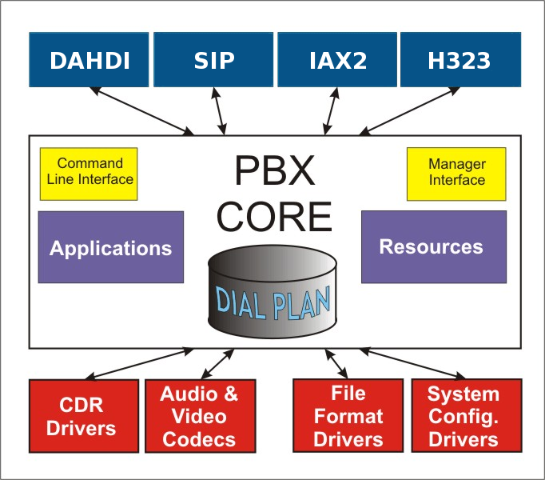

Before we dive too far into the various types of modules, let's first take a step back and look at the overall architecture of Asterisk.

Asterisk Architecture
We need to add CEL and Bridge modules to this picture, and take CLI and Manager out for now
The heart of any Asterisk system is the core. The PBX core is the essential component that takes care of bridging calls. The core also takes care of other items like reading the configuration files and loading the other modules. We'll talk more about the core below, but for now just remember that all the other modules connect to it.
From a logistical standpoint, these modules are typically files with a .so file extension, which live in the Asterisk modules directory (which is typically /usr/lib/asterisk/modules). When Asterisk starts up, it loads these files and adds their functionality to the system.
The core also contains the dialplan, which is the logic of any Asterisk system. The dialplan contains a list of instructions that Asterisk should follow to know how to handle incoming and outgoing calls on the system.
Asterisk modules which are part of the core have a file name that look like pbx_xxxxx.so.
{kind=link}